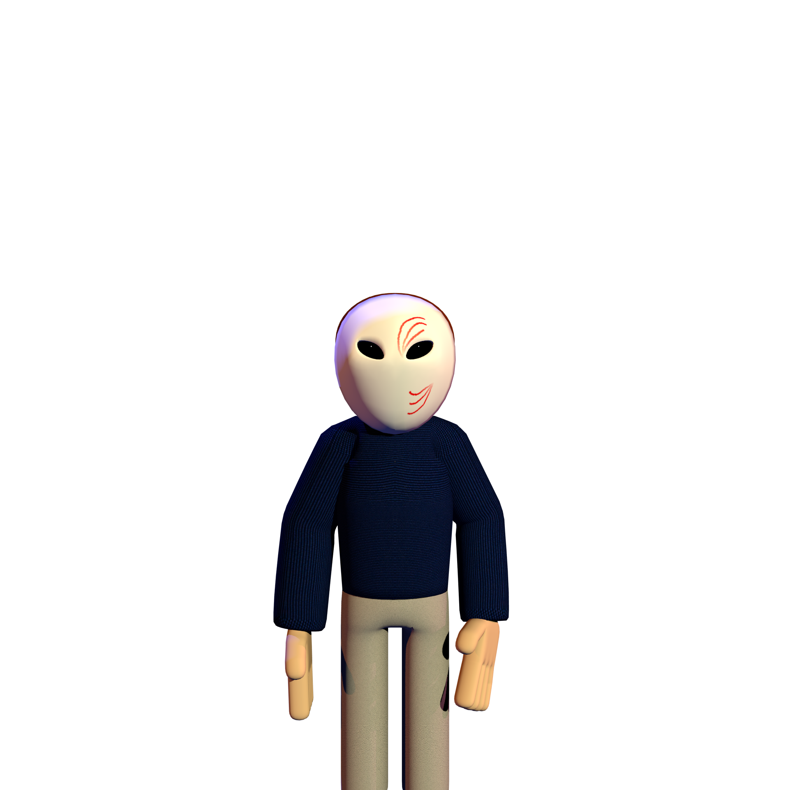
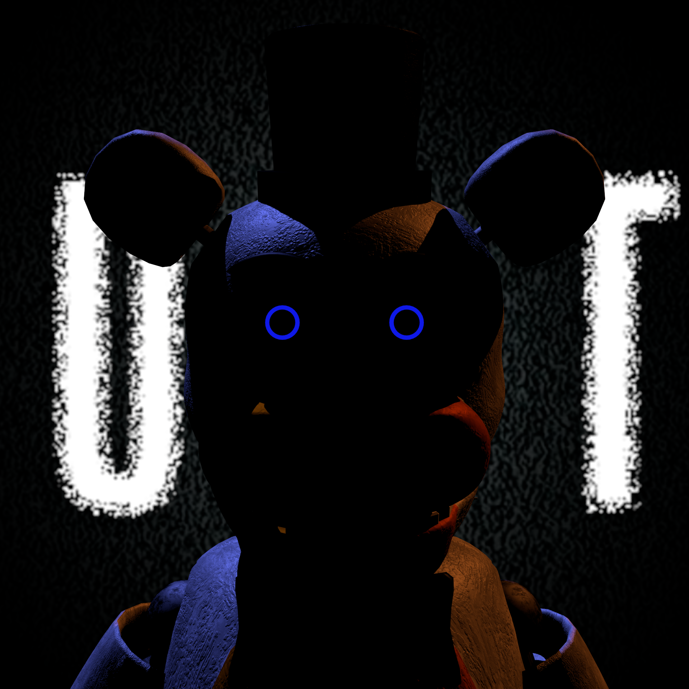

Mehoy Menoy
Creator: bartish behaviour
A GameJolt project from bartish behaviour. The page is linked here while the team waits on a final banner and short creator-written pitch.


Project Library
This page lists most of the games from the different game creators from the UNTITLED TEAM Discord Server, More may be added later on.
GameJolt lineup
Creator: bartish behaviour
A GameJolt project from bartish behaviour. The page is linked here while the team waits on a final banner and short creator-written pitch.
Creator: The Mr. DJ22
Survive five nights inside Musical's Pizza Party World. The job looks simple until the characters start acting alive.
Creator: The Mr. DJ22
After losing Rodger's Pizza Playhouse, Andrés takes a job at the theatre that stole his character. The past follows him there, and the story ties into the FFD Saga.
Creator: The Mr. DJ22
A remake of the original FNaMR experience, with updated graphics, reworked lore, returning characters, mechanics, and story pieces.
Creator: CSB
A financially desperate night guard takes a job at an animatronic restaurant with a very bad history.
Creator: CSB
The same worker returns for a new summer job at the renovated Fishery's Family Diner.
Creator: CSB
In 1996, Daniel Stephans is hired to watch a horror attraction built around the mysteries of the older diner.
Creator: CSB
In 2008, Jena takes a job at a new horror attraction based on the still-unsolved Fishery's Family Diner case.
Creator: CSB
Ronald, a 26-year-old investigator, reopens a dropped case and follows what remains of the story back to the factory.
Creator: CSB
An overhaul slot for the Fishery's Family Diner series. Drop in the official short pitch and banner when the creator sends them over.
Creator: reese's pieces
A wire-connection puzzle game about opening the way forward. More creator-provided text can be added later.
Creator: The Mr. DJ22
A follow-up FNaMR22 fan game centered around the factory setting. Added from the extra GameJolt link in the team list.